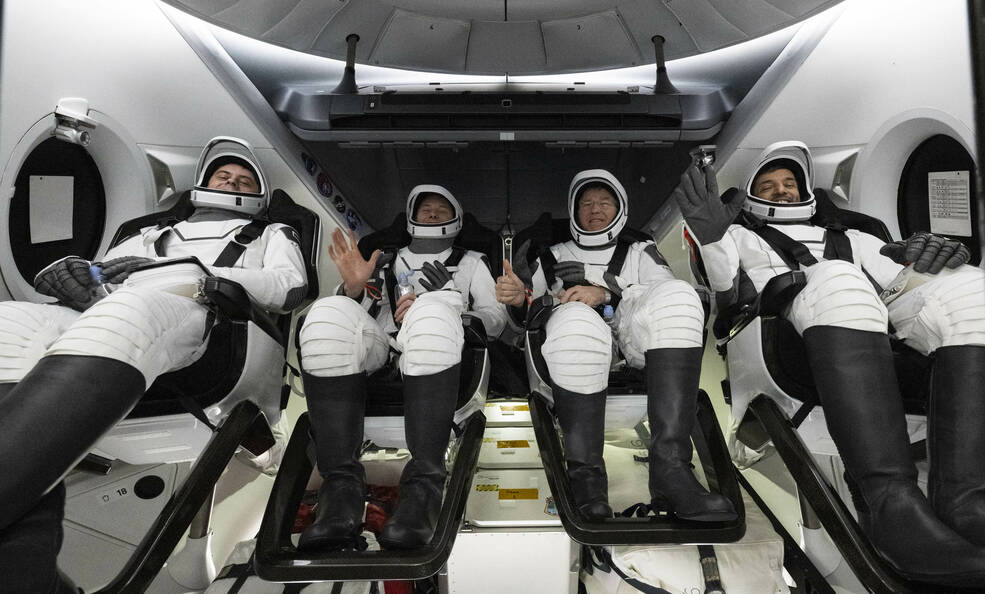
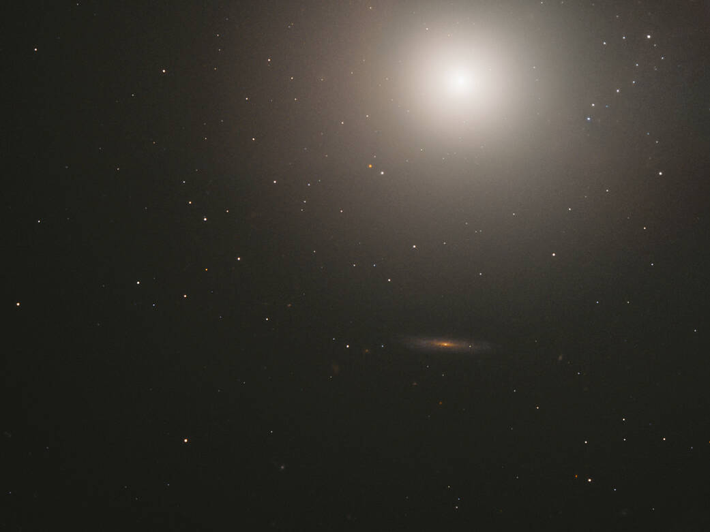
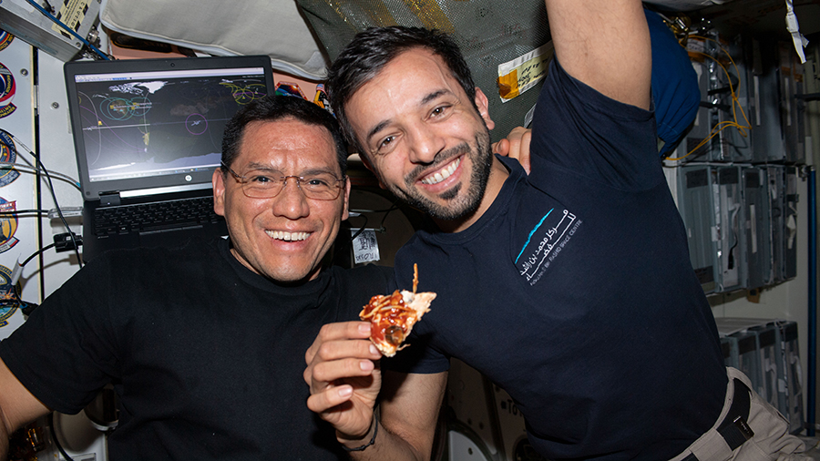
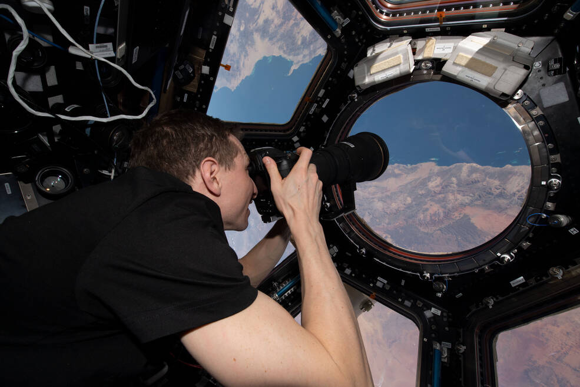

NASA’s SpaceX Crew-6 Safely Returns to Earth Near Florida Coast
Roscosmos cosmonaut Andrey Fedyaev, left, NASA astronaut Warren “Woody" Hoburg, second from left, NASA astronaut Stephen Bowen, second from right, and UAE (United Arab Emirates) astronaut Sultan Alneyadi, right, are seen inside the SpaceX Dragon Endeavour spacecraft onboard the SpaceX recovery ship MEGAN shortly after having landed in the Atlantic Ocean off the coast of Jacksonville, Florida, Monday, Sept. 4, 2023. Bowen, Hoburg, Alneyadi, and Fedyaev are returning after nearly six-months in space as part of Expedition 69 aboard the International Space Station.
NASA to Discuss Psyche Asteroid Mission, Optical Communications Demo.

This artist’s concept depicts NASA’s Psyche spacecraft en route to its destination in the main asteroid belt between Mars and Jupiter.
Hubble Views a Sphere of Stars
This huge ball of stars – around 100 billion in total – is an elliptical galaxy located some 55 million light-years away. Known as Messier 89, this galaxy appears to be perfectly spherical; which is unusual for elliptical galaxies that tend to be elongated ellipsoids. The apparently spherical nature of Messier 89 could, however, be a trick of perspective, and the result of its orientation relative to Earth.
Super Blue Moons: Your Questions Answered
A trifecta of labels is being applied to the Moon of Aug. 30-31, 2023. It’s a full moon, a supermoon, and finally a blue moon. You may hear it referred to as a super blue moon as a result. It sounds exciting, but what does that really mean? We’ve got you covered.
Ongoing Crew Swap, Science Activities on Station this Week
Aboard the International Space Station on Wednesday, four new crew members are adjusting to their first week orbiting Earth. Meanwhile, another quartet of Expedition 69 flight engineers is preparing to end their six-month stay in space.
Scientific Work on the Space Station by NASA’s Space-X Crew-6
NASA’s SpaceX Crew-6 soon wraps up its mission aboard the International Space Station. NASA astronauts Stephen Bowen and Woody Hoburg, UAE (United Arab Emirates) astronaut Sultan Alneyadi, and Roscosmos cosmonaut Andrey Fedyaev spent their months on the orbiting lab conducting scientific investigations and technology demonstrations that help prepare humans for future space missions and benefit people back on Earth.